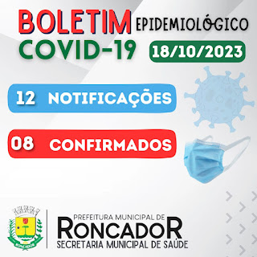

Alguns dias atrás foi encontrado o corpo de um senhor de idade conhecido na região como Robertinho, uma agente de saúde estava fazendo visistas nas casas como de costume e ao chegar na casa do Robertinho ela nota algo estranho,como não tinha visto antes até que ela resolve entrar na casa para ver oque esta acontecendo, ao entrar na casa percebe que o Robertinho não se encontra nem na sala e nem na cozinha então ela resolve ir até o quarto e encontra o idoso na sua cama com o seu corpo coberto, com receio ja, ela tira a coberta e depara com o senhor de idade ja sem vida, mas ela nota um problema, percebe que o corpo ja esta em decomposição e que ja fazia alguns dias que ele o havia falecido, então ela volta para o posto de saúde para pedir ajuda na retirada do corpo desse senhor, ao retirarem o corpo levam até o hospital para de lá levar á funeraria. Então várias pessoas ficaram comovidas com o falecimento do idoso tão conhecido, e até hoje tentam até decobrir o motivo do falecimento, mas ninguém consegue desvendar esse mistério. E tambem por vários boatos que falam dentre esse assunto, não da para saber quem esta realmente falando o verdadeiro acontecimento, dentre varias historias que inventam, não da para saber quem realmente esta falando a verdade.
Voltamos com os boletins epidemiológicos..
De acordo com o Boletim Epidemiológico divulgado pela Secretaria de Saúde de Roncador na quarta-feira da semana passada, no dia 18, foram confirmados 8 casos de Covid-19 no Município. E ainda foram, realizadas mais 12 notificações. E para prevenir disso tudo voltar que nem antigamente cuide-se e se previna.
